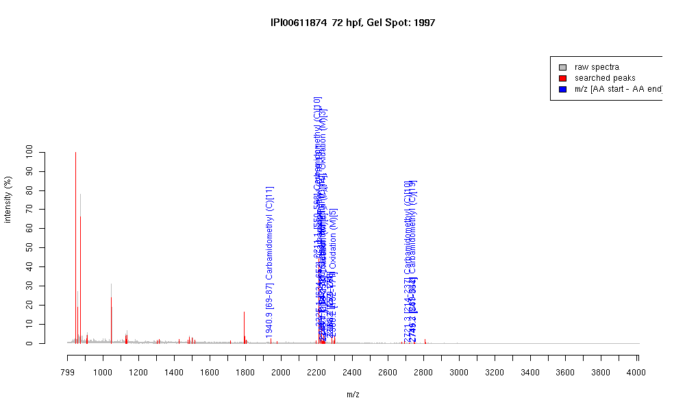

| Name | PREDICTED: similar to KIAA1982 protein |
|---|---|
| MW | 83146.2 |
| PI | 9.73 |
| Mascot Protein Score | 65 |
| Masses (matched / unmatched) | 11 / 42 |

| Peptide | MZ (calc) | MZ (observed) | Error (DA) | Error (PPM) | Start | Stop | Modifications |
|---|---|---|---|---|---|---|---|
| DLVTSATETECAGGFGIG | 1940.9017 | 1940.9337 | 0.032 | 16 | 69 | 87 | Carbamidomethyl (C)[11] |
| IHTGEKPFTCTQCGKSFN | 2211.0435 | 2211.1047 | 0.0612 | 28 | 550 | 568 | Carbamidomethyl (C)[10] |
| IHTGEKPFTCTLCGKSFN | 2225.0842 | 2225.1194 | 0.0352 | 16 | 634 | 652 | "Carbamidomethyl (C)[10,13]" |
| IHTGEKPFTCTQCGRSFN | 2239.0496 | 2239.1414 | 0.0918 | 41 | 242 | 260 | Carbamidomethyl (C)[10] |
| IHMIIHTGGKPFTCTQCRK | 2244.1199 | 2244.0813 | -0.0386 | -17 | 154 | 172 | "Carbamidomethyl (C)[14], Oxidation (M)[3]" |
| QHMRIHTGEKPFTCTQC | 2246.0376 | 2246.1003 | 0.0627 | 28 | 238 | 256 | Oxidation (M)[3] |
| IHTGEKPFTCTQCWKSFN | 2283.0798 | 2283.1763 | 0.0965 | 42 | 270 | 288 | |
| LKIHMIIHTGGKPFTCTQC | 2284.1875 | 2284.1682 | -0.0193 | -8 | 152 | 171 | |
| LKIHMIIHTGGKPFTCTQC | 2300.1824 | 2300.1787 | -0.0037 | -2 | 152 | 171 | Oxidation (M)[5] |
| IHTGEKPFTCTQCGISFN | 2721.2468 | 2721.2952 | 0.0484 | 18 | 214 | 237 | Carbamidomethyl (C)[10] |
| SSHLDQHIRIHTGEKPITC | 2746.3511 | 2746.2339 | -0.1172 | -43 | 289 | 312 | Carbamidomethyl (C)[19] |
| SSHLNHHMRIHTGEKPFT | 2749.2869 | 2749.2786 | -0.0083 | -3 | 541 | 564 |